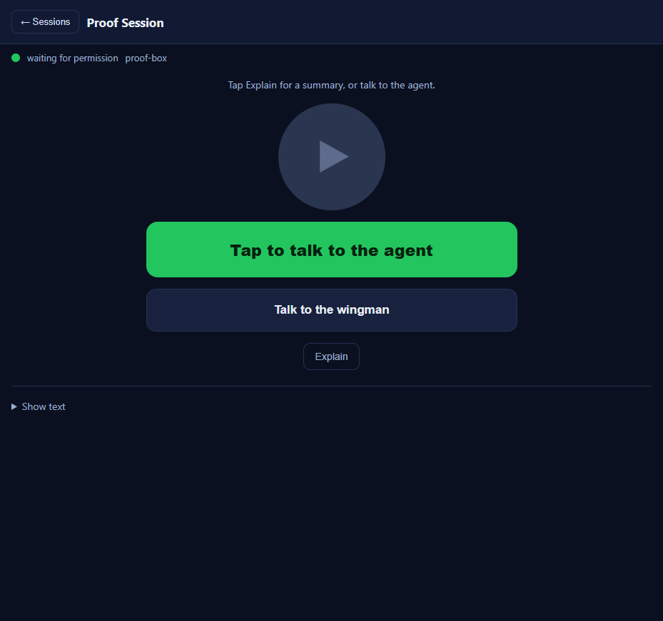
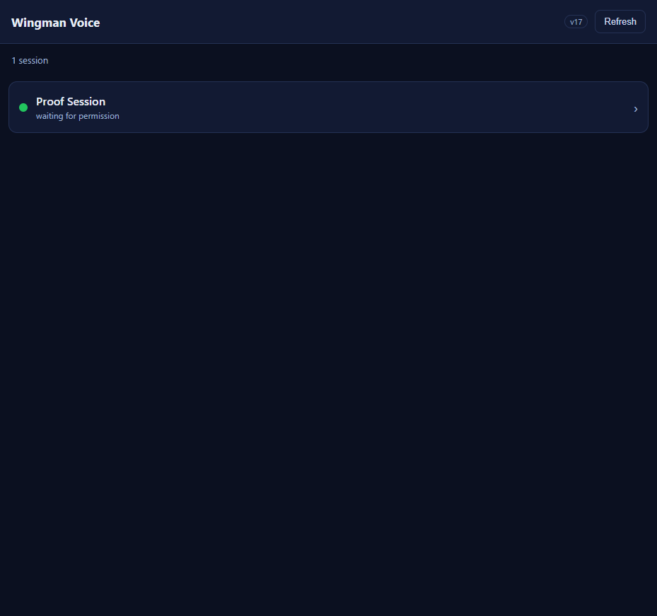

Title: [Voice] /m/ auto-refresh: poll list + session every 5s and on app foreground
Branch: issue-534-m-auto-refresh Container: cockpit (static mobile assets under wwwroot/m/, client-only)
Added a single 5-second polling ticker to the /m/ Wingman Voice mobile page (m.js) that refreshes whichever screen is visible, plus immediate-on-foreground refresh and pause-while-hidden:
loadSessions(quiet). A new quiet flag makes the auto-refresh path not blank the list to "Loading sessions..." and not replace it with an error on a transient failure; the list DOM is now rebuilt only after the fetch succeeds.refreshSessionMeta() updates only #sv-dot and #sv-state from the gateway's current effective color/state. It is gated by sessionViewBusy() (busy / recording / sending / menu shown / audio playing) so a tick never disturbs an in-progress action, and re-checks the gate after its await.visibilitychange, pageshow, and focus listeners refresh the visible screen immediately and (re)start the ticker; the ticker and listeners short-circuit on document.hidden so no requests fire in the background.index.html (css link, version label, script src), the m.js header, and sw.js (cache name + shell list, which were still at v15).The exact committed /m/ assets (the real v17 m.js / m.css / index.html) were served by a local proof harness (proof-server.ps1) that also stubs the gateway endpoints the page calls (/sessions?envelope=true, /wingman/voice/ready, /wingman/menu, /wingman/voice) with a controllable session state, plus a request log. The page was driven in a real Brave/Chromium browser (cc-playwright) at a mobile viewport. "Changing the gateway state" = a /_control call that flips the stub session's color/state, exactly the input the page reads.
| # | Criterion | Expected | Actual (measured) | Result |
|---|---|---|---|---|
| 1 | List auto-refresh ~5s | Change a session's state; list reflects it within ~5s with no Refresh tap | Gateway flipped red->green; list dot changed #F14C4C->#22C55E and sub-line "waiting for input"->"waiting for permission" within ~6.5s, no tap | PASS |
| 2 | Session dot/state ~5s | #sv-dot/#sv-state update within ~5s of a state change | In the session view, dot updated to rgb(34,197,94) and state to "waiting for permission" (caught within 109ms of the poll on the next tick) | PASS |
| 3 | Foreground refresh ~1s | On returning to foreground, visible screen refreshes within ~1s, not the next tick | State changed while hidden; on visibilitychange visible the dot updated in 57ms; an immediate /sessions fetch was logged | PASS |
| 4 | No poll while hidden | With the tab hidden, no /sessions requests; resume on visible | Over a full 8s hidden window the request log showed zero /sessions requests (only the test's own /_log read). Requests resumed on foreground. | PASS |
| 5 | Never disrupts an in-progress action | Across a tick, playback/recording continue; summary, typed text, busy state not cleared | Real audio played to completion (4s) across a tick; typed draft "draft that must survive" preserved; the dot stayed red and did NOT jump to the gateway's new green while playing. After playback ended (idle), the next tick correctly picked up green - a skip, not a freeze. | PASS |
| 6 | Transient failure does not blank | A network drop on a tick keeps the last good list; polling continues | Simulated /sessions fetch rejection on a tick: list row remained, DOM unchanged, status stayed "1 session" (not blanked, no error). Next successful tick updated to green - polling continued. | PASS |
| 7 | Manual Refresh still works | Tapping Refresh triggers an immediate refresh | State changed to blue; tapping Refresh updated the dot to #3B82F6 in 53ms | PASS |
| 8 | Cache-bust bumped | m.js?v= / m.css?v= and the on-screen label incremented | Page served and rendered at v17 (on-screen label "v17"; m.js?v=17 served the new bundle containing refreshSessionMeta / startPolling). sw.js cache + shell also bumped to v17. | PASS |


No drift. This is a client-only static asset change (mobile JavaScript behavior). No architecture container relationships or security posture change; no docs/cencon/ file required updating.
I believe this is finished. All eight acceptance criteria are implemented and proven in a real browser against the exact committed v17 assets. The full solution builds clean (dotnet build cc-director.sln: 0 warnings, 0 errors).